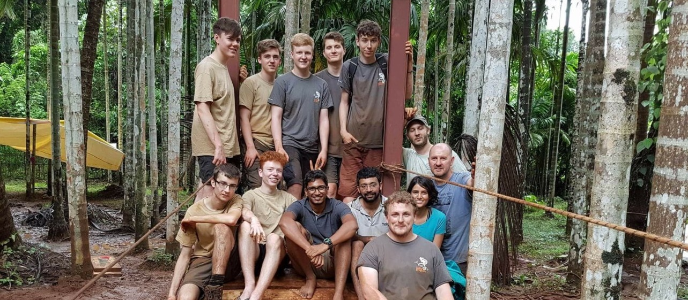
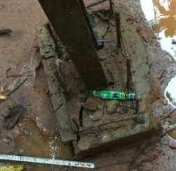
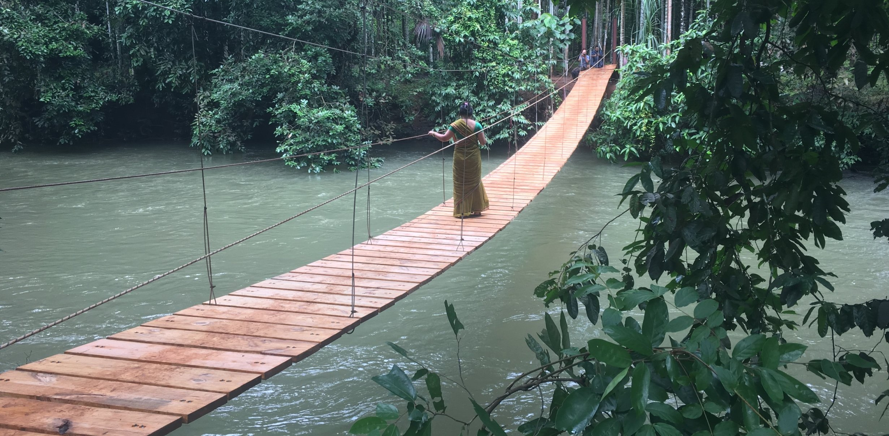

Computer Science inbeds itself into the fundamental question of who am I?
"Solving a problem is only the surface of meeting a challenge. Being able to analyse, test and realise the limitations and assumptions required is equally as important."
~Samuel Brotherton
Talk about Air Cadets
The St Gregory's Bridge

Diagram 1 - The team behind the suspension bridge.
In the summer of 2016; whilst accounting for limited capital, time and manpower I led a team of mathematicians in designing a 120ft suspension bridge, in a remote location in Goa, India. An iterative process was required to solve many of the project threatening problems; when our planned method would falter it was imperative we pulled through, returning to the drawing board we would re-evaluate the predicament and produce an ever more elegant solution. The bridge still stands today, after two monsoon seasons, it is testimony to our skills at perseverance, patience and ingenuity. The local market is the lifeline of the village, this bridge reduces the commute from two hours to 20 minutes, as well as connecting families separated by a treacherous river.
Fixing the plaque onto the bridge in the rain.
Experiencing and living in a culture outside my own was an eye-opening experience. It is impossible to describe how that time has affected me as a person, profoundly shaping my values, outlook and perceptions. Aside from character building, working on a large-scale project with such a diverse team, developed and tested my problem solving and engineering skills. On a daily basis, project threatening issues would arise requiring innovative and fast solutions.
Building the bridge during the monsoon season was the source of most issues, however this was the only time available to us as students. During this season the river is at maximum capacity, the water was treacherous. Falling in would be fatal therefore we needed to develop a way of safely constructing the bridge. The solution was to build the bridge from the outside, inwards. We started by placing the pulleys on top of the steel pillars, running the cables along the pulleys. From here we could loosely fasten the wooden planks onto the bottom cables. As the planks were only loosely fixed, it allowed us to slide them out onto the river. Creating a harness by attaching ourselves to the top cable, we could then crawl out onto the planks, tightening them as we went, once a plank was tightened we could advance to the next. This process was iterated for over 80 individually hand cut planks.

Whilst in the UK we anticipated that in such wet conditions we would be unable to secure the cement and steel beams ourselves, the weather would make it impossible for the cement to dry. To accommodate this, we hired a local contractor to pour the cement months before we arrived. This came with its own issues as the original workers ran off with the money! Another contractor was hired; however it was too late and the cement was unable to set properly, the result of this was that midway through the project the cement holding the steel beams began to crack. The steel beams would not be strong enough on their own (once the bridge was finished, all pressure on the front supports would be directed downwards). If the cement had thoroughly set, the foundations would have been strong enough to support the bridge during construction however, as this was not the case, we had to rethink the whole development of the bridge. We began by reinforcing the front pillars with the excess cable we had, fixing them to the back ones. In conjunction with this, across the bridge, we connected the top and bottom cables, forcing the pressure downwards on the supports.

A village local walking across the bridge for the first time.
The reaction of the locals during the opening ceremony of the bridge made all the time, effort and stress worthwhile. To this date, the genuine
smile and pleasure on the faces of the locals as they walked across the bridge for the first time is the most memorable experience I have ever had.
Coding Projects
Neural Networks Webpage
Projectile Shooter
Star Explorer
EPQ
Neural Networks
Project ongoing.
Projectile Shooter
A java package that calculates when a rocket must be launched in order to collide with another rocket in a 2D plane.
Includes a java application to give a visual representation of the collision.
public interface Projectile {
double getSpeed();
double getAngle();
}
Any code that follows from the above interface will be able to work out when the second rocket must be
launched in order to hit the first rocket.
An example implementation of the above interface is as follows:
MathsModule mm = new MathsModule(missile, aa, distanceAway);
Thread th = new Thread(mm);
th.start();
//Complete other operations..
try {
th.join();
} catch (InterruptedException e) {
e.printStackTrace();
}
//To get outputs:
timeToStart = mm.getTimeToStart();
xCollide = mm.getxCollide();
yCollide = mm.getyCollide();
timeCollide = mm.getTimeCollide();
An example of the code being run with the included graphics package is as follows:
An object orientated (OO) approach to the problem of stellar observation designed for amateur astronomers.
The project inputs an image of an absorption spectra from a star (note this would work with any absorption spectra, it
does not have to be from a star), this image is turned into an array of Pixel objects; these objects hold only the relevant
information, such as the position of the pixel on the image and whether the pixel is black and white. This array is then
compared with similar arrays that represent inputted emission spectrums for different elements; if there is a match, then
the name of the element is returned as well as the accuracy of the result.
for (int i = 0; i <= height - 1; i++){
//Goes across the image, for example when x = 0, we are working on the left most pixel.
for (int x = 0; x <= width - 1; x++) {
pixels[x][i] = new Pixel(img.getRGB(x, i), accuracy);
//If it is black then add to a count to determine how many absorption lines there are, the last means that
//the same absorption line is not counted twice.
if(pixels[x][i].getBlack() && !last){
step++;
last = true;
} else {
last = false;
}
}
//If we have already found the best degree of accuracy or if this is the right degree.
if (step == shouldBe || stop){
stop = true;
} else if (shouldBe == 0){
stop = true;
array.add(setPixels(70));
//This allows for me to make a simplified version for the general user, with an average accuracy.
} else {
//If the number it should be is less than the number it is, it should go back up.
if (step < shouldBe || goneTo){
goneTo = true;
//If the number it should be is more than the number it is, we go back one and use that as the closest
//that we will get.
if (step > shouldBe){
stop = true;
array.add(setPixels(accuracy - 1)); //worst come situation.
}
array.add(setPixels(accuracy + 2));
} else {
array.add(setPixels(accuracy - 10));
}
}
}
The code which analysed the Image to get the location of the absorption/emission spectra.
This project was my third attempt at a large Computer Science project, it served as an accumulation of all the knowledge I
learned from studying Computer Science at A-Level for the past year as well as spending the last year self-teaching myself Java.
Initially starting off with this project I had no knowledge of OO techniques, I had read about them but I had not completely
grasped the concept; it was halfway through this project after I had created the first fully functioning procedural prototype
that OO finally clicked. I then went back and re-coded the whole project in an OO manor, teaching myself how classes, inheritance
and encapsulation worked, incorporating all these techniques into the finished project. Although there were many set-backs,
I still managed to complete the project way before the May 2017 deadline to a standard that with very broad guidelines and
extremely minimal help I was, and my clients were, happy with.
What is unseen in the above demo is that when the 'Find file' button is pressed, a file explorer pops up that allows the
image to be selected.
In the above demo, the second image to be analysed is the same as the last image, however sodium has not been "seen" by the program yet,
once the element is added, then the software is able to analyse the element sodium.
This project aimed at modelling the stress and load experienced by a suspension bridge, comparing these values to the maximum
strength of the materials to determine the max load on the bridge.
This software was designed as a precursor to the Suspension Bridge we would build in India, calculating the measurements we would be
using. This was procedurally programmed, and therefore was limited in its uses from a software side. Bringing together all the
knowledge from my different A-Level subjects into one project; this software was extremely maths heavy from a mechanical perspective,
meaning the mechanics modules I was studying as well as my Physics came into use.
As an afterthought, going to India with an idea and a plan although it was somewhat vague gave us a sense that this monumental task
was possible.